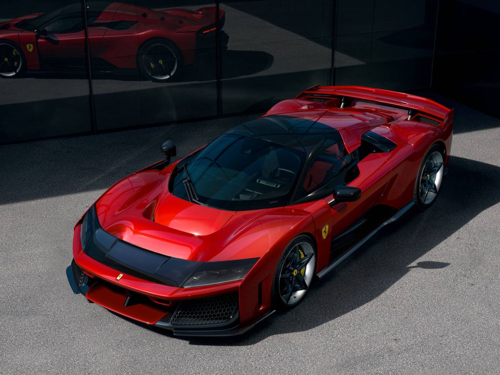
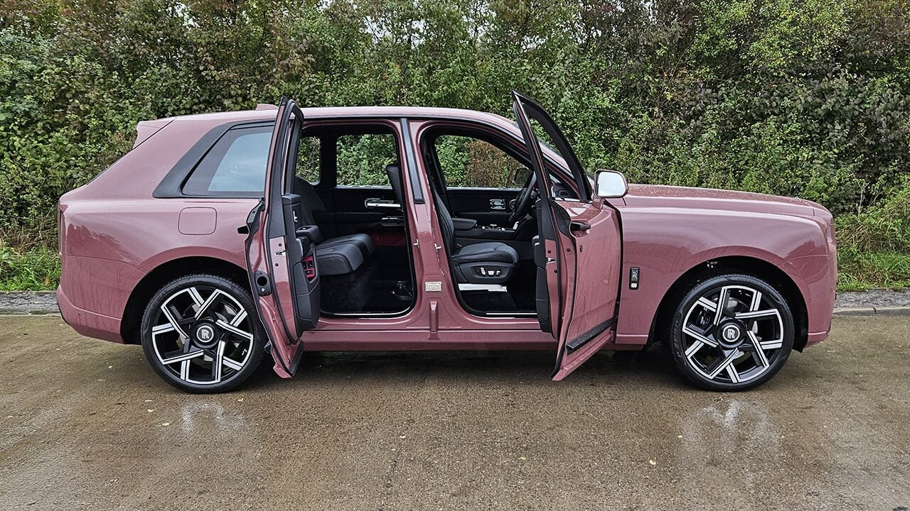
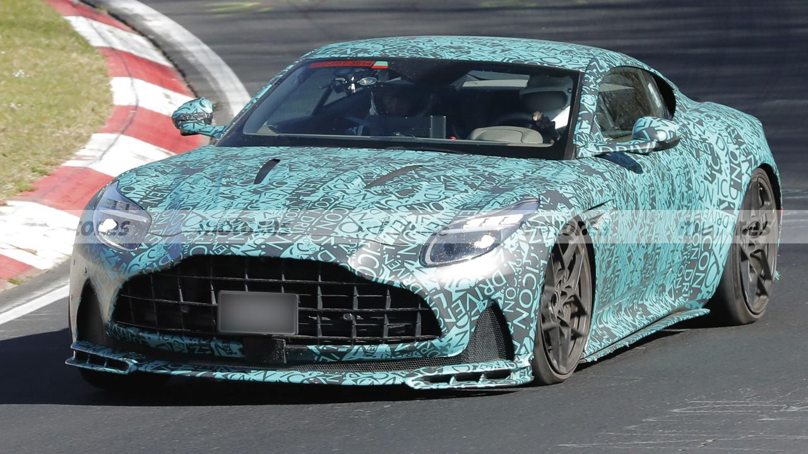

Notícies del Món del Luxe
Les últimes bombes: nous llançaments, edicions especials, records de velocitat, subhastes milionàries i tot el que passa al món dels cotxes que somiem. Actualitzat cada dia perquè no et perdis res.

Ferrari F80: Ja Està Tot Venut!
21 De Novembre De 2025 - No Hi Ha Comentaris. L'últim híbrid de Ferrari amb V6 híbrid que fa... amb 1200 CV i un V6 híbrid que gira a... . S'embut...
Llegeix Més

Rolls-Royce Cullinan Series II Black Badge: 6.75 Tones De Luxe I 600 CV
21 De Novembre De 2025 - No Hi Ha Comentaris. L'únic SUV que pot portar-te al desert i a l'òpera sense ningú que digui res. S'embut...
Llegeix Més

Aston Martin DB12 AMR: El Nou 'Super Tourer' De 680 CV
21 De Novembre De 2025 - No Hi Ha Comentaris. 325 km/h i seients que fan massatge... mentre dispenses una altra continent.
Llegeix Més